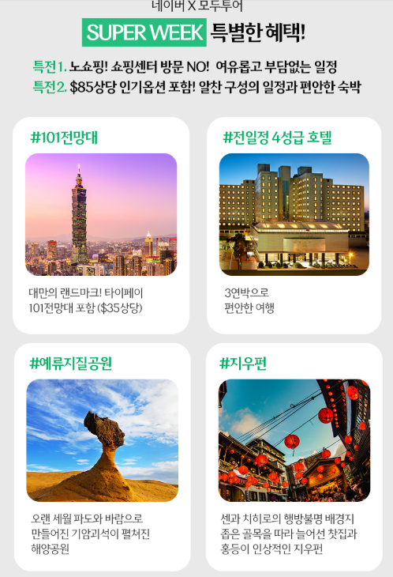
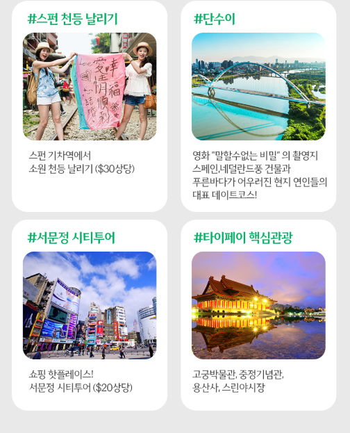

1. 대만 패키지 3박4일 일정의 핵심 특징
이번 대만 패키지 3박4일은 타이베이 도심뿐 아니라 대만 북부에서 많이 찾는 단수이, 예류, 스펀, 지우펀까지 함께 둘러보는 일정이 핵심입니다. 개별 자유여행으로 이동 동선을 하나씩 직접 짜기 부담스러운 분이라면 여러 지역을 한 번에 연결해 둘러볼 수 있다는 점이 장점이 될 수 있습니다. 특히 첫 대만 여행이라 어디부터 가야 할지 고민되는 경우, 대표 관광지를 중심으로 구성된 패키지는 여행 계획에 들어가는 시간을 줄이고 일정 전체를 비교하기에도 편리합니다. 다만 같은 3박4일 상품이라도 항공 출발시간과 귀국시간에 따라 실제 현지 체류시간이 크게 달라질 수 있으므로, 예약 전에는 단순히 '3박4일'이라는 표기만 보기보다 첫날과 마지막 날에 실제 관광이 가능한 시간을 꼭 확인하는 것이 좋습니다.
2. 단수이·예류·스펀·지우펀 관광 포인트
대만 여행에서 단수이, 예류, 스펀, 지우펀은 서로 분위기가 달라 한 일정에 포함되어 있을 때 만족도가 높은 편입니다. 단수이는 강변 산책과 노을 풍경으로 유명하고, 예류는 독특한 해안 지형을 볼 수 있는 관광지로 잘 알려져 있습니다. 스펀은 철길 주변 풍경과 천등 체험이 대표적이며, 지우펀은 언덕길과 골목 풍경, 야경을 즐기기 좋은 곳입니다. 이번 상품명에는 천등 체험도 포함된 것으로 안내되어 있어 단순히 관광지만 둘러보는 것보다 체험 요소까지 함께 즐길 수 있다는 점이 특징입니다. 다만 기상 상황이나 현지 교통, 관광지 운영 여건에 따라 방문 순서나 체류시간이 달라질 수 있으므로 세부 일정표를 함께 확인하는 것이 좋습니다.

3. 노쇼핑 일정과 4성급 호텔 구성 확인
상품명에는 노쇼핑과 4성급 호텔이 강조되어 있습니다. 패키지 여행을 선택할 때 쇼핑센터 방문 여부를 중요하게 보는 분이라면 노쇼핑 일정인지 확인하는 것이 특히 중요합니다. 다만 '노쇼핑'이라는 표현이 있더라도 여행 중 개별 자유시간이나 관광지 주변 상점 이용과는 별개일 수 있으므로, 정확한 일정은 최종 상품 상세페이지를 기준으로 보는 것이 안전합니다. 호텔의 경우에도 단순히 등급만 보기보다 실제 호텔명, 위치, 객실 형태, 조식 제공 여부, 관광지와의 이동거리 등을 함께 확인하면 좋습니다. 3박4일 일정은 이동이 잦을 수 있기 때문에 호텔 위치가 여행 피로도에 영향을 줄 수 있습니다.

4. 타이베이 101 전망대와 특식 4회
타이베이 101 전망대는 대만 여행에서 대표적으로 많이 찾는 관광 포인트 중 하나입니다. 상품명에 101 전망대가 포함되어 있다면 입장권이 기본 포함인지, 특정 시간대 방문인지, 현지 사정에 따라 대체 일정이 있는지 등을 확인해보는 것이 좋습니다. 또한 특식 4회가 안내되어 있으므로 어떤 메뉴가 포함되는지 살펴보면 여행 중 식사 만족도를 예상하는 데 도움이 됩니다. 패키지 상품은 식사 횟수와 메뉴 구성이 전체 만족도에 큰 영향을 주는 경우가 많기 때문에, 조식·중식·석식 중 어느 식사가 포함되는지와 자유식이 있는지도 함께 체크해보는 것이 좋습니다.
5. 대만 3박4일 패키지 예약 전 꼭 확인할 점
예약 전에는 출발 확정 여부, 항공사, 출발 및 도착 시간, 수하물 규정, 호텔 배정, 가이드 경비, 포함 식사, 선택관광 여부, 개인경비, 취소·환불 규정을 순서대로 확인하는 것이 좋습니다. 특히 패키지 가격이 비슷하더라도 포함 항목이 다르면 실제 여행 중 추가로 지출하는 비용 차이가 커질 수 있습니다. 또한 출발일에 따라 항공편과 호텔, 관광 순서가 변경될 수 있으므로 이 페이지의 내용은 상품을 비교할 때 참고용으로 활용하고, 최종 예약 시에는 연결된 판매 페이지의 최신 일정과 조건을 기준으로 확인하세요.
대만 패키지 3박4일 상품 확인하기
실제 출발일, 최신 가격, 항공편, 호텔, 포함·불포함 조건과 취소 규정은 판매 페이지에서 최종 확인하세요.
여행 상품 자세히 보기 →대만 패키지 3박4일 FAQ
대만 패키지 3박4일에는 어떤 지역이 포함되나요?
상품명 기준으로 타이베이와 단수이, 예류, 스펀, 지우펀 등이 안내되어 있습니다. 실제 방문 순서는 출발일별 상세 일정에서 확인하는 것이 좋습니다.
노쇼핑 상품인가요?
상품명에는 노쇼핑으로 안내되어 있습니다. 다만 최종 예약 전 상세 일정과 포함·불포함 조건을 다시 확인하세요.
타이베이 101 전망대가 포함되나요?
상품명 기준 101 전망대 일정이 포함된 것으로 안내되어 있습니다.
천등 체험도 하나요?
상품명에 천등 체험이 포함된 것으로 표시되어 있습니다.
호텔 등급은 어떻게 되나요?
상품명 기준 4성급 호텔로 안내되어 있습니다. 실제 배정 호텔은 예약 페이지에서 확인하세요.